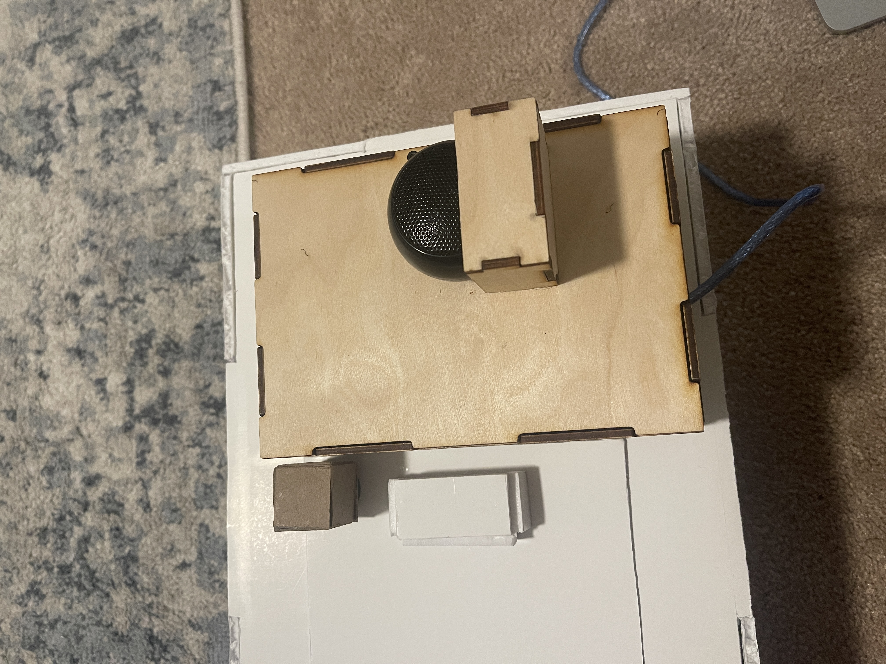
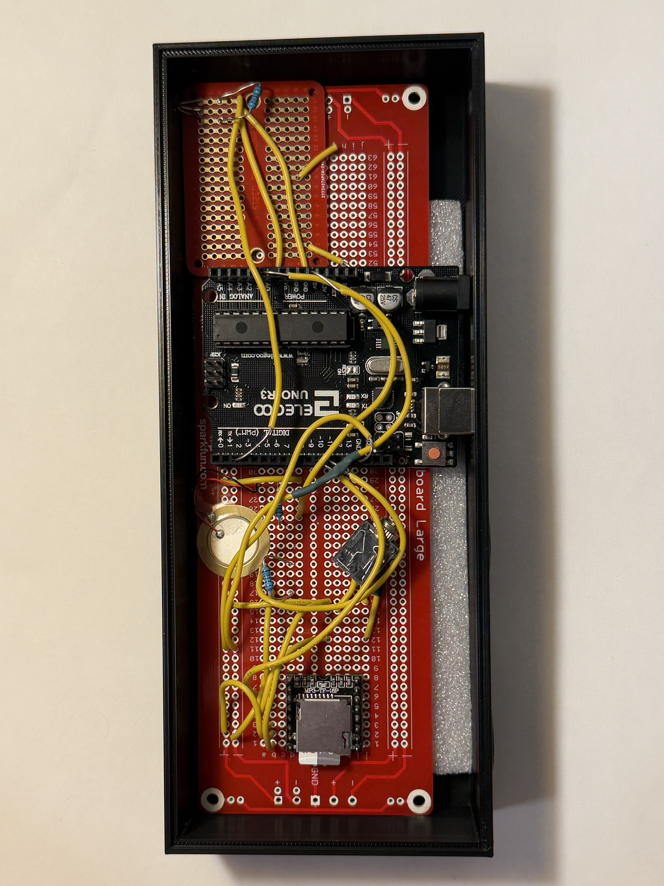
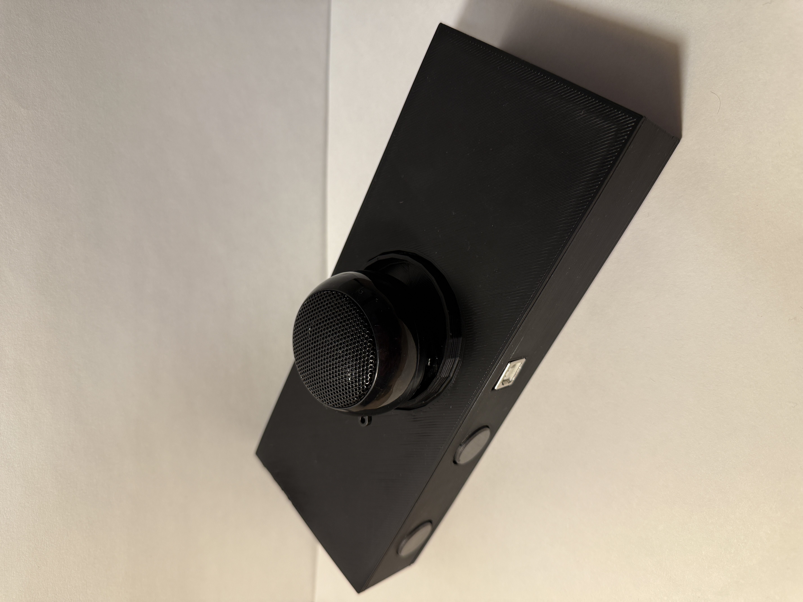

Role: Hardware & Systems Designer
Tools: Microcontroller, Hall Effect Sensor, Piezo Sensor, MIDI MP3 Speaker, Soldering & Enclosure Fabrication
Project Type: Interactive Mechanical System
The challenge was to address a personal frustration while designing for user interaction. I chose to solve the issue of roommates leaving laundry in the dryer by creating an alarm system that would only stop once the laundry room door was opened.
The goal was to design a system that encouraged immediate action rather than passive awareness. Instead of a simple timer, the solution required physical interaction with the environment to deactivate the alarm.
The system integrates multiple sensors to determine when laundry has finished and whether it has been removed. A piezo vibration sensor detects when the dryer is running, while a hall effect sensor determines whether the door is open or closed. A MIDI MP3 speaker delivers the alarm sound.
To prevent false triggers, I programmed time delays that allow the system to distinguish between normal cycle pauses and the actual completion of the dryer. This ensures the alarm activates only when appropriate and remains reliable in everyday use.
The initial build focused on functionality and sensor integration. At this stage, the system successfully detected motion and door state, triggering the alarm as intended.


Feedback highlighted opportunities to improve durability, sound quality, and overall refinement. The speaker produced minor rattling, the enclosure required reinforcement, and several wire connections needed more secure soldering.
I strengthened the enclosure, fully soldered all electrical connections, and refined the internal layout to reduce vibration. These changes improved both reliability and the overall polish of the device.
The final system operates reliably and achieves its intended behavioral outcome: the alarm continues until the laundry room door is opened. This ensures the dryer is cleared promptly rather than ignored.
The improved enclosure and secure wiring make the device durable and consistent in performance. The refined design feels cohesive and intentional rather than experimental.


This project strengthened my understanding of integrating hardware, programming logic, and physical fabrication into a cohesive interactive system.
I learned that reliability depends not only on correct code and sensor logic, but also on structural integrity and careful assembly. Iteration improved both performance and presentation, resulting in a functional device that effectively solves a real-world problem.